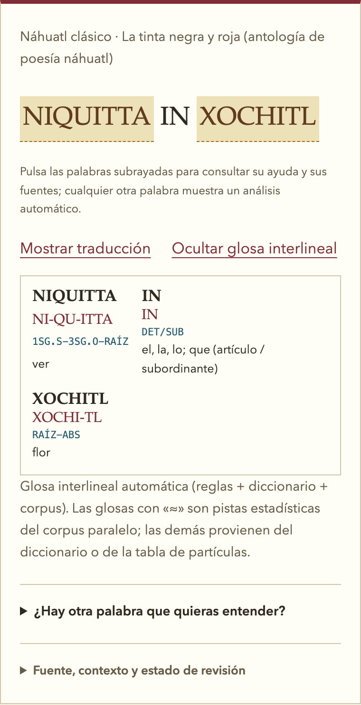

Lecturas guiadas
Doce lecturas con 48 pasajes de diez obras. Toca cualquier palabra para ver cómo se arma, abre la glosa interlineal o la traducción original, y practica con ejercicios sobre la grafía del propio pasaje.
NIQUITTA → ni-qu-itta, «yo-lo-veo»
